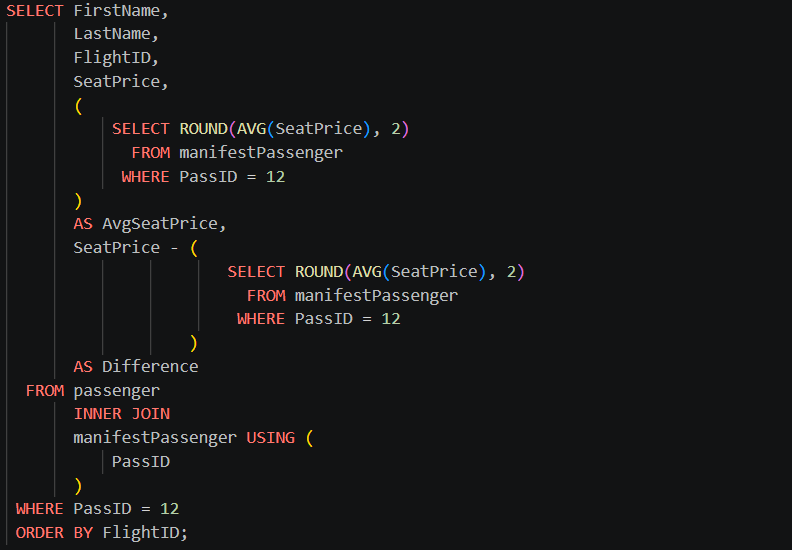
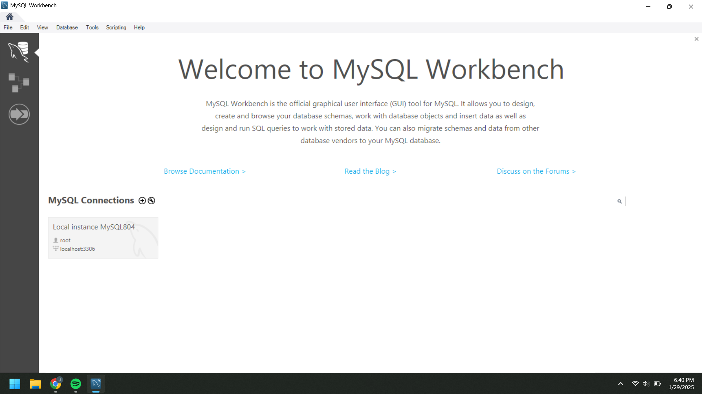
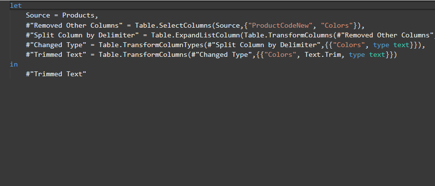
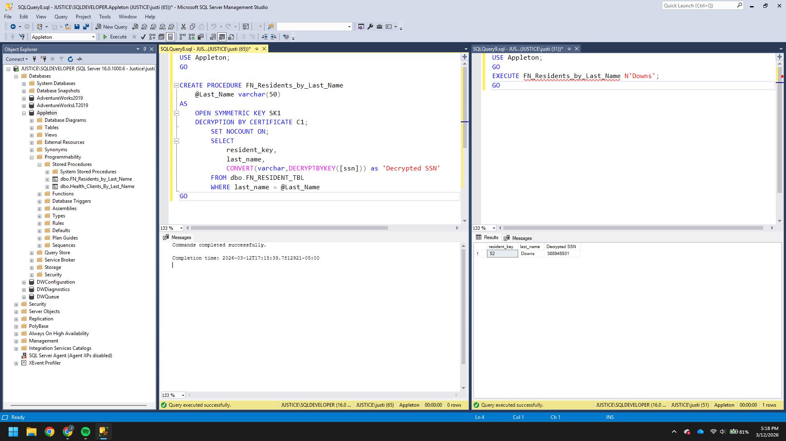

Database 1
Data analytics is nothing without data, and you can't have data without a database to keep it in. This course acted as an introduction to Structured Query Language (SQL) and the basics of databse design.

Some key takeaways I took from this course include:
- It's possible to produce the same outputs with different queries, it's important to assess the efficiency of you statements and optimize them.
- Creating an entity relation diagram (ERD) is a key deliverable when designing and creating a database.
- It's critical to keep regular up to date backups of your database in case of corruption or egregious user error.
Database 2
In Database 2 we learned more complex structures of SQL such as aggregation and performing calculations on the data in-flight, we even designed and created our own locally hosted database in MYSQL and began exploring report building options.

Some key takeaways I took form this course include:
- Subqueries can be used to calculate, aggregate, and group data with complex queries.
- There typically is no undo button when working in a DB environment, and as statements can alter mass amounts of data at once, this stresses good practice, data integrity, and up to date backups.
- When creating a database it's important to design your schema thoughtfully and test it thoroughly before deployment.
Introductory ETL
Introductory ETL taught us how to get data from it's source, whether that's a file, folder, data warehouse, data lake, or a database, and extract it, transform it, and load it into another database or report. We built foundations with tools such as Power Query and Alteryx.

Some key takeaways I took from this course include:
- Data pipelines build the foundation of your ETL workflow, it's important to make sure they're strong and secure.
- Power Query is a powerful tool, and it comes pre-loaded into Office programs. I consider it the next level of Excel, and I personally use it all the time in my work.
- Alteryx provides a solution with a graphical user interface to setup workflows for ETL, I find it great as a visual interface for exploratory analysis.
Data Security and Privacy (Course still in progess, will likely update when done.)
As more and more modern amenities become available online, so to does the amount of personal data. This data falling into the wrong hands can come with significant risk, so this course teaches us about data regulations and how to secure data in our systems with best practices such as role-based privilges, row level security, and encryption protocols.

Some key takeaways I took from this course (so far) include:
- There are many golbal/federal regulations sites that collect user data are required to comply with, such as HIPAA and GDPR.
- The Principle of Least Privilege (PoLP) is one of the most effective ways to ensure data privacy by restricting access to data to only those who need it to perform their duties.
- The design of your system should dictate isolation between modules users interact with and where sensitive data is stored; said data should also almost always be encrypted.